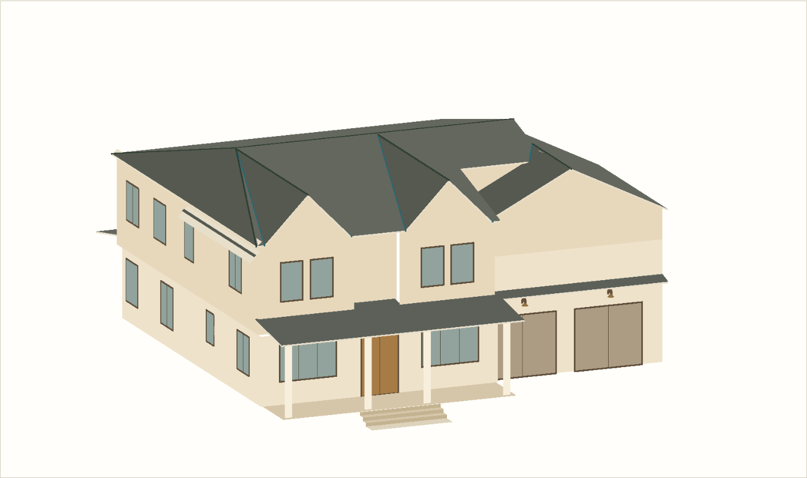

Balanced roof adopted in 3D - November 17. The main ridge is centered with equal 4.5:12 front/rear slopes and equal 23.95-ft runs, replacing the short-front/long-rear roof without raising the ridge. The three front gables, walls, windows, garage and porch footprints stay fixed. Equal slopes are a proportion choice, not a universal rule; roof faces need not meet at 90 degrees. The plan, sketches and actual house model now use this balanced roof. Construction and the deep garage-roof projection remain approval-required.
Both sketches now show the same centered main ridge and equal 4.5:12 slopes as the plan and actual model, with the original roof height preserved.
The main ridge and front eave continue to the garage's outer roof edge. All three front gables match: 14.35 ft wide, 12:12 pitch and 27.775-ft peaks. The third gable has a closed framed pediment aligned with the existing front gable faces; the garage wall, doors, lights and slab stay recessed in their original positions. A proposed pair of 3 x 5-ft bronze-grid windows is centered under the garage gable at the same sill/head heights as the other front pairs. No extra floor or separate door canopy is added.
Proposed garage windows W1/W2: sill 13 ft / head 18 ft above house-floor datum; 1-ft gap between the pair. They are in the existing recessed garage-front wall, not the projecting pediment. That volume is currently unfinished roof space; the loft ends farther back. These are attic-glazing concepts, not loft/bedroom windows or occupied-space approval. Actual framing, headers, glass safety, access, flashing, product size and garage fire separation require review. The model window count now includes these two attic windows; existing room openings remain unchanged.
Projection trade-off: the common roof extends 5 ft 3.9 in beyond the garage's finished front wall (4 ft 8.4 in beyond its previous roof edge). The front pediment is finish/framing over that projection, not a relocated masonry wall. No unsupported cantilever, beam, column, foundation or attachment is approved by this sketch. All rooms remain covered; upper-room height, roof-to-wall flashing, valley collection, overflow, height limits and structure require professional design. Adopted in the Three.js model on November 17; construction approval remains unresolved.
This preserved study uses the earlier 3:12 main roof and 6:12 garage roof. Its elevations, perspectives and headroom notes are historical, not representations of the new November 17 roof plan.
Drawing refinement: clipped soffits, solid square porch posts, consistent ivory masonry, traditional window grids, paneled garage doors and a straight cast-stone entry surround. Roof planes, rooms and openings are unchanged. Garage brick detailing below is an optional finish study, not a new structural lintel.
November 16 revision, not approved. The 3D model is unchanged. The small canopy over the garage doors is removed; the two wall lights remain. The main/service roof still continues over the west garage bay to meet the 6:12 garage gable, rather than stopping above the exposed triangular wall. Loft headroom, floor levels, doors and windows stay fixed. Framing and drainage require professional design.

The main/service roof extends 8 ft 7.8 in farther forward, within the already roofed garage footprint. Its front wall head is fitted to the combined roof. This is a new spanning/framing arrangement over existing garage space, not an unsupported nine-foot cantilever off veneer. The former service-wall boundary stays in place under the roof.
The canopy is rejected. Retain the two centered bronze wall lights, existing taupe doors, ivory brick and opening locations. No upper windows or white siding are copied from the reference. The fixtures are concept shapes, not selected products; exposed-weather suitability, wiring, wet-location listing and operating clearance require review.
The 4.8-inch-deep wall setback stays covered by a sloped, finish-matched metal weathering cap over a closed masonry head. It ends at the lower wall face: no added canopy, dark roof band or deep trim fascia. Concealed flashing, a drip and end transitions still need detailing; the weathering cover is not simply deleted.
The proposed views also retain the earlier cross-gable/service-roof drainage revisions. The current views use the unchanged 3D roof definitions.
Blue arrows show downhill valley flow; red lines identify level valleys in the current roof. The revised main-to-garage valley continues to the garage front. Its eave collector, overflow and leader route still need design; a roof edge alone is not a completed outlet.
Retained from the current model: two 12-inch walking treads and three equal 5.4-inch rises between the approach and porch. No stair change is proposed.
Green/amber/red in the plan below means calculated ceiling clearance of at least 7 ft / 5–7 ft / below 5 ft. This uses a provisional 18-inch vertical roof zone above the ceiling, not a designed assembly. It is not a code floor-area calculation.
No production files or 3D geometry are changed by this page. Review this proposal before any model update.